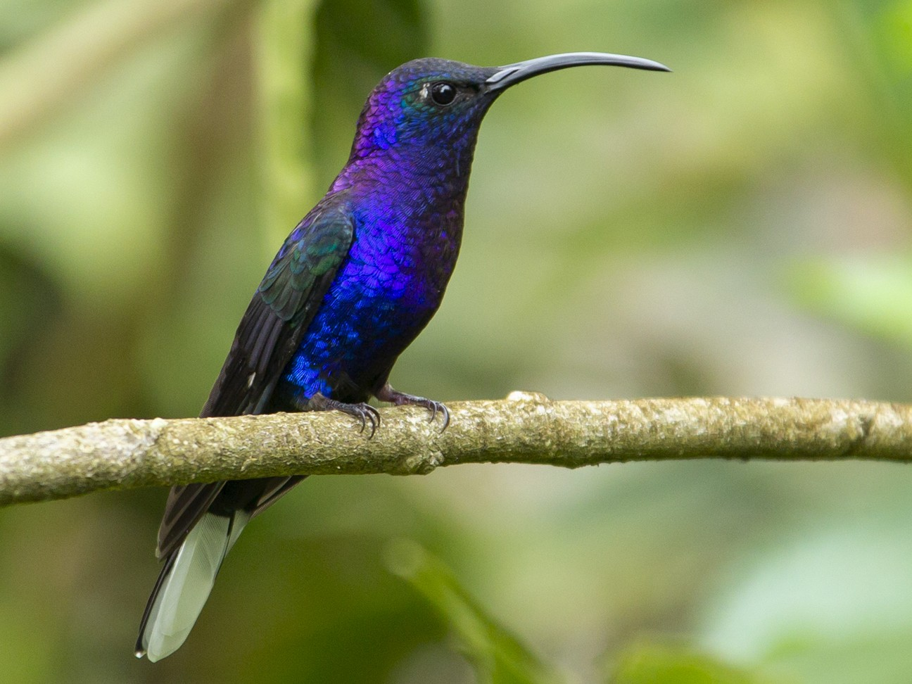

Hummingbird
Where They Live

The 340 species of Hummingbirds are restricted to the Americas. Most species live in the tropics, and 17 species nest in the United States. During migration periods in winter, hummingbirds will occupy habitats that provide nectar. Some of the habitats they occupy include scrublands, pine and oak woodlands, gardens, and tropical forests. One of the most commonly found hummingbirds in North America is the Ruby-throated hummingbird (right). One of the many hummingbird species that are found in South America and Mexico is the Violet-sabrewing (second picture on the right).
Migration
Of the 366 known hummingbird species, only 12-15 species migrate annually. This is due to the fact that most hummingbird species live in
the Amazon tropical rainforest belt where seasonal temperature changes and food sources are relatively constant which removes the need to
migrate.
Although hummingbirds mostly eat nectar from flowers they will also
eat insects and meat, especially migratory hummingbirds that need to
fatten up before winter. To prepare for migration, hummingbirds will
try to double their weight and you will notice that they appear much
bigger. Some hummingbirds will eat too much and will not be able to
make the journey

Migratory hummingbirds will travel great lengths to reach
their destinations. Their migration can take as many as 22 hours of
flight time and they will often travel 25 miles a day. Hummingbirds can
also be seen flying in flocks. To the right is a map of the ruby-throated
and rufous hummingbirds, ruby-throated hummingbirds travel east to central U.S and rufous hummingbirds travel west.